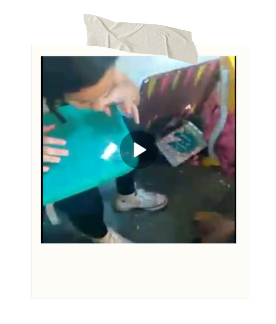

Sua História de Superação

Tudo começou com um simples lanche, mas a jornada estava só começando...
Entre risadas e mordidas, a força para seguir em frente só aumentava.
Houve momentos de reflexão e busca por fé, essenciais para a superação.

Os desafios apareceram, mas nada foi capaz de abalar sua determinação.
Com persistência, cada obstáculo foi vencido, um a um.
Superando limites, a transformação começou a acontecer.

Mesmo nos dias mais difíceis, nunca faltou esperança de um novo começo.
Mesmo nas dificuldades e incertezas, estávamos juntos.
A renovação veio, trazendo luz e alegria para a vida.
E no final, a vitória foi celebrada com orgulho e felicidade!